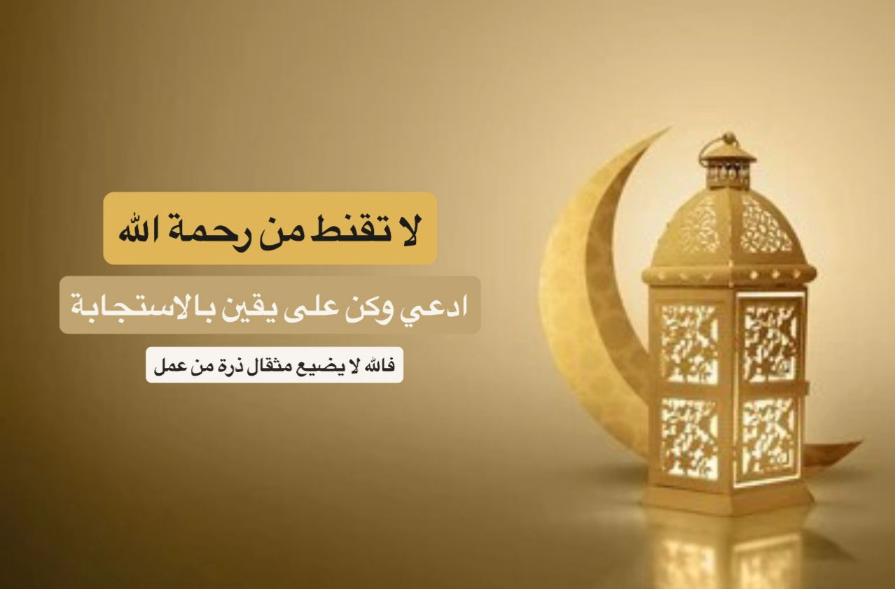

اهلا بك في صفحة الدعاء الكبير
السلام عليكم ورحمه الله وبركاته, في هذه الصفحة ندعوكم للسباحة في بحر الدعاء، ولتعمقوا في فن الاتصال بالله والتضرع إليه بقلوب ملؤها الخشوع والتواضع. إن الدعاء سُلَّم القلوب ومفتاح السموات، فلنحمل عبء أحلامنا وهمومنا وأمانينا، ولنسكبها أمام الله، الذي لا يخيب من استغاث إليه.
🟢 اللهم استقامة مهما مالت بنا الايام, وقلوبا خالية من الأحزان, وحياة مليئة بالاطمئنان, و حسنات تثقل الميزان, اللهم اني قد اصابني من التعب ما يكفيني, واكثرت من الذنوب فاهديني, واخاف على نفسي فأحميني, وأنت الذي بقدرتك خلقتنا وبلطفك هديتنا و بجميل سترك سترتنا, وفي احسن صورة صورتنا, ومن خير أمة أخرجتنا.. فأتم علينا وعلى أحبابنا. اللهم من اعتز بك فلن يذل, ومن اهتدى بك فلن يضل, ومن استكثر بك فلن يقل, ومن استقوى بك فلن يضعف, ومن استغنى بك فلن يفتقر, ومن استنصر بك فلن يخذل, ومن استعان بك فلن يغلب, ومن توكل عليك فلن يخيب.. يا ودود يا ودود..أسألك لذة السجود وجنة الخلود, ودعاء غير مردود.. يا معبود احشرني انا واهلي في جنة الخلود.. اللهم أعطنا من خير ما تعطي السائلين, واجمع لنا صلاح الدنيا والدين, واغفر لنا ولجميع المسلمين, واحسن ظننا بالاخرين, وزينا بأخلاق سيد المرسلين. اللهم اني اعوذ بك من زوال نعمتك, وتحول عافيتك, وفجاءة نقمتك, وجميع سخطك..
اللهم اني اعوذ بك من عين تصيب القلب فتحزنه, وتصيب الرزق فتنقصه, وتصيب البال فتتعبه, وتصيب النجاح فتفشله, اللهم اني وليتك امري فأعوذ بك من سوء حظي, وضيق صدري وفراغ صبري. اللهم اجعلني ممن نظرت إليه فرحمته, وسمعت دعاءه فأجبته, اللهم اني اسالك توفيقا في طريقي, وراحة في نفسي, وتيسيرا في امري, ربي أعوذ بك من شتات الأمر, ومس الضر, وضيق الصدر, اللهم إني استغفرك من كل ذنب يعقب الحسرة, ويورث الندامة, ويرد الدعاء, ويحبس الارزاق. اللهم اجعل لي المكتوب اجمل من المرغوب, اللهم يامن لطفه بخلقه شامل, وخيره لعبده واصل, اللهم اني اعوذ بك من جهد البلاء, ودرك الشقاء, وسوء القضاء, وشماتة الأعداء, اللهم اغنني بحلالك عن حرامك, وبفضلك عمن سواك.
اللهم انك قد أكرمتني فلك الحمد, وسترتني فلك الحمد, ورزقتني فلك الحمد, و عافيتني فلك الحمد, لك الحمد حبا وشكرا, ولك الحمد يوما وعمرا, ولك الحمد دائما وابدا, ولك الحمد حتى ترضى, ولك الحمد اذا رضيت, ولك الحمد بعد الرضى. اللهم فرحة تبكي العيون, وتزيل الهموم, وتمحي ما مضى من الغموم, يارب أناجيك بقلب أيوب ولست ببالغ ضره, وبدمعة يعقوب ولست ببالغ صبره, اللهم ارحني بعد التعب, واسعدني بعد الحزن, وكافئني بعد الصبر, اللهم اني اعيذك قلبي من وحشة الدنيا وكدرها, ومن حر جهنم وجمرها, اللهم لا تسكن في قلوبنا الا الحلال ولو طال بنا الحال, اللهم اجعلني ممن أقبل تائبا فقبلته, وسألك سؤالا فأعطيته, وشكى لك همه ففرجته, وعلمت فضيحته فسترته.. ياربي كن لي حبيبا وقريبا, ولدعائي مجيبا, اللهم اني اعوذ بك من هم يسهرني, ومن حزن يكسرني, ومن تفكير يرهقني, ومن أمر يبكيني. اللهم ابعد عنا أذى الدنيا. وحيرة النفس, وحزن الليل, وبكاء القلب, وموت الضمير.
اللهم ارزقنا اجابه الدعاء, وصلاح الحال و الأبناء, وحسن الأداء, وبركة العطاء, اللهم اكتب لنا محو الذنوب, وستر العيوب, ولين القلوب. اللهم لا تجعلني واجعل لأحد, ولا تجعلني ثقلا على قلب احد, ولا تجعلني سببا في بكاء أحد, واجعلني يا الله كغيمة مرت و روت ثم ولت وامطرت. اللهم ارزقني فرحة تبكي العيون, وتزيل الهموم, وتمحي ما مضى من الغموم. اللهم خفف عني ثقل هذه الايام, فقد امتلئ قلبي بالاحزان, ياربي لقد ضعفت ولا غيرك يقويني, ولقد يئست ولم أفقد فيك يقيني, ولقد ضللت ولا سواك يهديني, ولقد غرقت وأنت وحدك منجيني.. ياربي اجعل عفوك عني دائم, ورضاك عني قائم, واجعلني عن الذنوب نادم, اللهم قويني بك حين يقل صبري, ولا تتركني حين يغلب امري, وكن معي حين يضيق صدري, ولا تحاسبني بقلة استغفاري.
اللهم اغسل قلوبنا من أوجاعها, وألسنتنا من أقوالها, وأعيننا من خيانتها, اللهم لا تحرمني لذة السجود بين يديك, ولا لذة النظر إليك, من نقصد وانت المقصود, ومن نعبد وأنت الرب المعبود, ومن نطلب وانت صاحب الكرم والجود, ياربي اجعل لي عفوك عني دائم.. ورضاك عني قائم, واجعلني من الذنوب نادم. اللهم اني استودعتك نفسي من كل حب كاذب, ومن صداقة منافق, ومن قلب حاقد, ومن عين حاسد, يا مؤنس وحدتي, ويا راحمي في غربتي, ويا ولي نعمتي, اللهم يامن حفظت الحبيب في الغار, ويامن نجيت الخليل من النار, ويامن جعلت الجنة للأبرار, يامن بيده حياتي, يامن اليه يرجع امري كله, ربي بيدك سعادتي وشقائي, يا مسخر الجبال الراسية, و يا مسخر القلوب القاسيه, ويا مسخر العباد العاصيه.
اللهم يا سامع الصوت, ويا سابق الفوت, ويا كاسي العظام لحما بعد الموت, يامن اجاب نوحا حين ناداه, وكشف الضر عن ايوب في بلواه, وسمع يعقوب في شكواه, ورد إليه يوسف واخاه, اللهم أنت الرجاء, ومنك العطاء, وإليك الدعاء, اللهم أصلح لي ديني الذي هو عصمة امري, واصلح لي دنياي التي فيها معاشي, واصلح لي اخرتي التي فيها معادي, واجعل الحياة زيادة لي في كل خير, والموت راحة لي من كل شر, اللهم في هذا اليوم اغسل قلوبنا من أوجاعها, وألسنتنا من أقوالها, وأعيننا من خيانتها.. اللهم لا تحرمنا فيه لذة السجود بين يديك, ولا لذة النظر اليك, اللهم في هذا اليوم ارزقنا فرحة تبكي العيون, وتزيل الهموم, وتمحي ما مضى من الغموم. اللهم في هذا اليوم صحة تعافي الابدان, وسعادة تمحو الاحزان, ونسمات ملئها الاطمئنان.
ياربي لقد ضعفت ولا غيرك يقويني, ولقد يئست ولم أفقد فيك يقيني, ولقد ضللت ولا سواك يهديني, ولقد غرقت وأنت وحدك منجيني, ياربي اجعل عفوك عني دائم, ورضاك علي قائم, واجعلني عن الذنوب نادم, ولباب توبتك قائم, اللهم امنحني القوة لأقاوم نفسي, والشجاعة لأواجه ضعفي, واليقين لأتقبل قدري, والرضا ليرتاح عقلي, والفهم ليطمئن قلبي, يامن لا تراه العيون.. ولا تخالفه الظنون.. ولا يصفه الواصفون.. اللهم متعنا براحة البال, وصلاح الحال, وقبول الأعمال, وانعم علينا بصحة الأبدان, واكفنا شر الانس والجان. اللهم امنحنا سترا يحجب ما اقترفناه, وعلما يزيل ما جهلناه, ورزقا يفوق ما تمنيناه. اللهم لك الحمد والشكر, اطعمت وسقيت, وكفيت واغنيت, وهديت فلك الحمد على ماقضيت, ولك الشكر على ما أنعمت به وأعطيت. اللهم اجعلنا من العتقاء في دار البقاء, وارزقنا الطهر والنقاء, وابعد عنا الحزن والهم والبلاء, وخذ بايدينا فنحن في دار ابتلاء, واجعل السنتنا رطبة بذكرك بدون رياء.
اللهم سق إلينا من رحمتك ما يغنينا, وأنزل علينا من بركاتك ما يكفينا, وأدفع عنا من نقمتك ما يؤذينا, وافض علينا من هديك ما يقربنا منك ولا يدنينا. اللهم لا تشمت اعدائي بدائي, واجعل القرآن العظيم دوائي وشفائي, انت ثقتي ورجائي, اللهم ثبت علي عقلي وديني, وبك ياربي ثبت لي يقيني, وارزقني رزقا حلالا يكفيني, وابعد عني شر ما يؤذيني, ولا تحجني إلى طبيب يداويني. اللهم ارحمنا اذا يئس منا الطبيب, وبكي علينا الحبيب, وتخلى عنا القريب والغريب, وارتفع النشيج والنحيب, اللهم ارحمنا اذا حملنا علي الاعناق, إلى ربك يومئذ المساق. اللهم ارحمنا إذا أهملنا فلم يزرنا زائر, ولم يذكرنا ذاكر, فما لنا من قوة ولا ناصر, ولا امل الا بك يا قاهر, يا قادر يا غفار الذنوب, يا ساتر العيوب, يا قاضي الحاجات, يا مجيب الدعوات..
اللهم اغفرلي مالا يعلمون, واجعلني خيرا مما يظنون, اللهم كن معي في بكاء الليل.. ولا تجعلني من اصحاب الويل, ياربي فقد ضاقت الاسباب, واغلقت الابواب, فردنا إلى الصواب, وأبعد عنا الهم والغم والاكتئاب, يارب الارباب, يا سريع الحساب, يا عظيم الجناب, يا كريم يا وهاب, ياربي فلا تحجب دعوتي, ولا ترد مسألتي ولا تدعني بحسرتي ولا تكلني الى حولي وقوتي, وارحم عجزي فقد ضاق صدري, وتاه فكري, وتحيرت في امري, وانت العالم سبحانك بسري وجهري, المالك لنفعي وضري, القادر على تفريج كربي, وتيسير عسري, اللهم يامن أقر له بالعبودية كل معبود, يامن يحمده كل محمود, يامن يفزع اليه كل مجهود, يامن يطلب عنده كل مقصود, يامن سائله من فضله غير مردود, يامن بابه لسؤاله غير موصود ولا محدود… اللهم ان في تدبيرك ما يغني عن الحيل, وفي كرمك ما هو فوق الأمل, وفي حلمك ما يسد الخلل, وفي عفوك مايمحو الزلل.

اللهم انت القريب.. وانت الصاحب والحبيب, وانت الواحد المجيب, وانت الشافي الطبيب, وانت الذي تعلم ما نريد, اللهم ارحم ضعفنا, وامن روعنا, واسعد قلوبنا, وفرج همومنا, وصرف عنا ما يقلقنا ويعكر صفونا, وارزقنا صبرا جميلا, وفتحا مبينا, وحسابا يسيرا, و جنة وحريرا.. اللهم إليك مددت يدي, وفيما عندك عظمت رغبتي, فاقبل توبتي, وارحم ضعف قوتي, واغفر خطيئتي, واقبل معذرتي, اللهم إنا نسألك عفوا يكفينا, وعافية تغنينا, ومقاما في الفردوس يعلينا, ورحمة ومغفرة لنا ولوالدينا.. اللهم لا تستدرجنا بالنعم, ولا تفاجئنا بالنقم, ولا تجعلنا عبرة للأمم.. اللهم لا تدع لنا ذنبا الا غفرته, ولا هما إلا فرجته, ولا دينا الا قضيته, ولا مريضا الا شفيته, ولا مبتلا إلا عافيته, ولا ضالا الا هديته, ولا غائبا الا رددته, ولا مظلوما الا نصرته, ولا أسيرا إلا فككته, ولا ميتا إلا رحمته.
اللهم اني وكلتك امري فكن لي خير وكيل, وخير دليل, ودبر لي امري فاني لا احسن التدبير, اللهم ألطف بنا حيث ما الأقدار دارت, ويسر لنا الخير إذا ما النفس إحتارت, وأنر بالإيمان دربنا أينما الأقدام سارت, واشدد عزمنا إذا ما القوة منا انخارت, وامنا من الفزع إذا السماء مارت, وأعطنا كتابنا باليمين إذا الصحف طارت, يا من بنورك أشرقت الأرض و الكواكب سارت, اللهم اجعلنا من اهل النفوس الطاهرة, والقلوب الشاكرة, والوجوه المستبشرة, اللهم إنا نسألك طريقا لا تضيق به الحياة, وقلبا لا يزول منه الأمل, ونورا يضيء لنا الدرب, ومغفرة تمحو كل ذنب, وجنة عرضها السماء والارض, اللهم لك هذا الدعاء فطهر به قلوبنا, واكشف به كروبنا, واغفر لنا ذنوبنا, واصلح به امورنا, واغننا من فقرنا, واكشف به همنا واشف مرضانا, واقض ديننا واجمع شملنا, وبيض وجوهنا, اللهم لا تكلني الى احد, ولا تحوجني الى احد, واغنني عن كل أحد.. يامن اليه المستند, وعليه المعتمد, وهو الواحد الأحد, الفرد الصمد, لا شريك له ولا ولد..
اللهم ابعد عنا اذى الدنيا, وحيرة النفس, وحزن الليل, وبكاء القلب, وموت الضمير, وسوء الخاتمة, اللهم ارزقنا اجابه الدعاء, وصلاح الحال و الأبناء, وحسن الآداء, وبركة العطاء, اللهم خفف علينا ثقل الأوزار, وارزقنا معيشة الأبرار, وامنع عنا برحمتك ما هو ضار, وبشرنا بكرمك بكل ما هو سار, وأعتق رقابنا من النار. اللهم املأ قلوبنا لك شكرا وحمدا,واكتب لنا في قلوب العباد ودا, وامدنا بفضلك وبالرزق مدا, ولا تسلط علينا من اهل السوء أحدا,. اللهم يا واسع العطاء, يا دافع البلاء, يا سامع الدعاء, اللهم في تدبيرك ما يغني عن الحيل, وفي كرمك ماهو فوق الأمل, وفي حلمك ما يسد الخلل, اللهم لا تكسر لي ظهرا, ولا تعظم علي امرا, ولا تكشف لي سترا, ولا تفضح لي سرا, اللهم ان عصيتك جهرا فاغفرلي, وان عصيتك سرا فاسترني, يا ستار العيوب.
🟢 اللَّهُمَّ إنِّي أعُوذُ بكَ مِنَ الكَسَلِ والهَرَمِ، والمَأْثَمِ والمَغْرَمِ، ومِنْ فِتْنَةِ القَبْرِ، وعَذابِ القَبْرِ، ومِنْ فِتْنَةِ النَّارِ وعَذابِ النَّارِ، ومِنْ شَرِّ فِتْنَةِ الغِنَى، وأَعُوذُ بكَ مِن فِتْنَةِ الفَقْرِ، وأَعُوذُ بكَ مِن فِتْنَةِ المَسِيحِ الدَّجَّالِ، اللَّهُمَّ اغْسِلْ عَنِّي خَطايايَ بماءِ الثَّلْجِ والبَرَدِ، ونَقِّ قَلْبِي مِنَ الخَطايا كما نَقَّيْتَ الثَّوْبَ الأبْيَضَ مِنَ الدَّنَسِ، وباعِدْ بَيْنِي وبيْنَ خَطايايَ كما باعَدْتَ بيْنَ المَشْرِقِ والمَغْرِبِ
🟢 اللَّهُمَّ لا مَانِعَ لِما أعْطَيْتَ، ولَا مُعْطِيَ لِما مَنَعْتَ، ولَا يَنْفَعُ ذَا الجَدِّ مِنْكَ الجَدُّ
🟢 اللَّهُمَّ اغْفِرْ لِي، وَارْحَمْنِي، وَاهْدِنِي، وَعَافِنِي وَارْزُقْنِي, اللَّهمَّ ربَّ السَّماواتِ وربَّ الأرضِ، وربَّ كلِّ شيءٍ، فالقَ الحبِّ والنَّوَى، مُنزِلَ التَّوراةِ والإنجيلِ، أعِذْني من شرِّ كلِّ ذي شرٍّ، أنت آخِذٌ بناصيتِه، أنت الأوَّلُ فليس قبلك شيءٌ، وأنت الباطنُ فليس دونك شيءٌ، وأنت الظَّاهرُ فليس فوقك شيءٌ، اقْضِ عنِّي الدَّينَ وأغْنِني من الفقرِ
🟢 اللهم إني أعوذ بك من الهم والحزن وأعوذ بك من العجز والكسل وأعوذ بك من الجبن والبخل وأعوذ بك من غلبة الدين وقهر الرجال
🟢 اللهمَّ مالكَ الملكِ تُؤتي الملكَ مَن تشاءُ، وتنزعُ الملكَ ممن تشاءُ، وتُعِزُّ مَن تشاءُ، وتذِلُّ مَن تشاءُ، بيدِك الخيرُ إنك على كلِّ شيءٍ قديرٌ، رحمنُ الدنيا والآخرةِ ورحيمُهما، تعطيهما من تشاءُ، وتمنعُ منهما من تشاءُ، ارحمْني رحمةً تُغنيني بها عن رحمةِ مَن سواك
🟢 اللَّهُمَّ رَبَّنَا لكَ الحَمْدُ أنْتَ قَيِّمُ السَّمَوَاتِ والأرْضِ، ولَكَ الحَمْدُ أنْتَ رَبُّ السَّمَوَاتِ والأرْضِ ومَن فِيهِنَّ، ولَكَ الحَمْدُ أنْتَ نُورُ السَّمَوَاتِ والأرْضِ ومَن فِيهِنَّ، أنْتَ الحَقُّ، وقَوْلُكَ الحَقُّ، ووَعْدُكَ الحَقُّ، ولِقَاؤُكَ الحَقُّ، والجَنَّةُ حَقٌّ، والنَّارُ حَقٌّ، والسَّاعَةُ حَقٌّ، اللَّهُمَّ لكَ أسْلَمْتُ، وبِكَ آمَنْتُ، وعَلَيْكَ تَوَكَّلْتُ، وإلَيْكَ خَاصَمْتُ، وبِكَ حَاكَمْتُ، فَاغْفِرْ لي ما قَدَّمْتُ وما أخَّرْتُ، وأَسْرَرْتُ وأَعْلَنْتُ، وما أنْتَ أعْلَمُ به مِنِّي، لا إلَهَ إلَّا أنْتَ
🟢 اللَّهُمَّ إنِّي أعوذُ بكَ من عذابِ القَبْرِ، اللَّهُمَّ إنِّي أعوذُ بكَ من عذابِ النارِ، اللَّهُمَّ إنِّي أعوذُ بكَ من الفِتَنِ، ما ظهَرَ منها، وما بطَنَ، اللَّهُمَّ إنِّي أعوذُ بكَ من فِتْنةِ الأعورِ الكذَّابِ
🟢 اللَّهمَّ إنِّي أعوذُ برِضاكَ من سخطِك، وبمعافاتِك من عقوبتِك، وبِكَ منكَ، لا أُحصي ثناءً عليكَ، أنتَ كما أثنيتَ علَى نفسِكَ
🟢 اللَّهُمَّ اغْفِرْ لي خَطِيئَتي وَجَهْلِي، وإسْرَافِي في أَمْرِي، وَما أَنْتَ أَعْلَمُ به مِنِّي، اللَّهُمَّ اغْفِرْ لي جِدِّي وَهَزْلِي، وَخَطَئِي وَعَمْدِي، وَكُلُّ ذلكَ عِندِي، اللَّهُمَّ اغْفِرْ لي ما قَدَّمْتُ وَما أَخَّرْتُ، وَما أَسْرَرْتُ وَما أَعْلَنْتُ، وَما أَنْتَ أَعْلَمُ به مِنِّي، أَنْتَ المُقَدِّمُ وَأَنْتَ المُؤَخِّرُ، وَأَنْتَ علَى كُلِّ شيءٍ قَدِيرٌ
🟢 اللهمَّ إنِّي أسألُكَ مِنَ الخيرِ كلِّهِ عَاجِلِه وآجِلِه ما عَلِمْتُ مِنْهُ وما لمْ أَعْلمْ، وأعوذُ بِكَ مِنَ الشَّرِّ كلِّهِ عَاجِلِه وآجِلِه ما عَلِمْتُ مِنْهُ وما لمْ أَعْلمْ، اللهمَّ إنِّي أسألُكَ من خَيْرِ ما سألَكَ عَبْدُكَ ونبيك، وأعوذُ بِكَ من شرِّ ما عَاذَ بهِ عَبْدُكَ ونَبِيُّكَ، اللهمَّ إنِّي أسألُكَ الجنةَ وما قَرَّبَ إليها من قَوْلٍ أوْ عَمَلٍ، وأعوذُ بِكَ مِنَ النارِ وما قَرَّبَ إليها من قَوْلٍ أوْ عَمَلٍ، وأسألُكَ أنْ تَجْعَلَ كلَّ قَضَاءٍ قَضَيْتَهُ لي خيرًا
🟢 اللهمَّ إني أسألُك فعلَ الخيراتِ، وتركَ المنكراتِ، وحبَّ المساكينِ، وأن تغفرَ لي وترحمَني، وإذا أردْتَ فتنةً في قومٍ فتَوَفَّني غيرَ مفتونٍ، أسألُك حبَّك وحبَّ مَن يُحبُّك، وحبَّ عملٍ يُقربُ إلى حبِّك
🟢رَبِّ أَوْزِعْنِي أَنْ أَشْكُرَ نِعْمَتَكَ الَّتِي أَنْعَمْتَ عَلَيَّ وَعَلَى وَالِدَيَّ وَأَنْ أَعْمَلَ صَالِحًا تَرْضَاهُ وَأَدْخِلْنِي بِرَحْمَتِكَ فِي عِبَادِكَ الصَّالِحِينَ. رَبِّ اشْرَحْ لِي صَدْرِي وَيَسِّرْ لِي أَمْرِي وَاحْلُلْ عُقْدَةً مِّن لِّسَانِي يَفْقَهُوا قَوْلِي.اللَّهمَّ اهدِني فيمن هديْتَ وعافني فيمن عافيْتَ، وتولَّني فيمن تولَّيْتَ، وبارِكْ لي فيما أعطيْتَ، وقِني شرَّ ما قضيْتَ، فإنَّك تقضي، ولا يُقضَى عليك، وإنَّه لا يذِلُّ من واليْتَ، ولا يعِزُّ من عاديْتَ، تباركتَ ربَّنا وتعاليْتَ. اللهمَّ إياكَ نعبُدُ ولكَ نُصلِّي ونَسجُدُ وإليكَ نَسْعَى ونَحْفِدُ نرجو رحمتَكَ ونخشى عذابَكَ إنَّ عذابَكَ بالكافرينَ مُلْحِقٌ اللهمَّ إنَّا نستعينُكَ ونستغفرُكَ ونُثْنِي عليكَ الخيرَ ولا نَكْفُرُكَ ونُؤمنُ بكَ ونخضعُ لكَ. اللهمَّ إنِّي أسألُكَ مِنَ الخيرِ كلِّهِ عَاجِلِه وآجِلِه ما عَلِمْتُ مِنْهُ وما لمْ أَعْلمْ، وأعوذُ بِكَ مِنَ الشَّرِّ كلِّهِ عَاجِلِه وآجِلِه ما عَلِمْتُ مِنْهُ وما لمْ أَعْلمْ، اللهمَّ إنِّي أسألُكَ من خَيْرِ ما سألَكَ مِنْهُ عَبْدُكَ ونَبِيُّكَ، وأعوذُ بِكَ من شرِّ ما عَاذَ بهِ عَبْدُكَ ونَبِيُّكَ، اللهمَّ إنِّي أسألُكَ الجنةَ وما قَرَّبَ إليها من قَوْلٍ أوْ عَمَلٍ، وأعوذُ بِكَ مِنَ النارِ وما قَرَّبَ إليها من قَوْلٍ أوْ عَمَلٍ، وأسألُكَ أنْ تَجْعَلَ كلَّ قَضاءٍ قَضَيْتَهُ لي خيرًا. يا مقلِّبَ القلوبِ ثبِّت قلبي على دينِكَ. اللهمَّ مالكَ الملكِ تُؤتي الملكَ مَن تشاءُ، وتنزعُ الملكَ ممن تشاءُ، وتُعِزُّ مَن تشاءُ، وتذِلُّ مَن تشاءُ، بيدِك الخيرُ إنك على كلِّ شيءٍ قديرٌ، رحمنُ الدنيا والآخرةِ ورحيمُهما، تعطيهما من تشاءُ، وتمنعُ منهما من تشاءُ، ارحمْني رحمةً تُغنيني بها عن رحمةِ مَن سواك.
🟢اللهُمَّ إني أَسْأَلُكَ العافيةَ في الدنيا والآخرةِ، اللهُمَّ إني أَسْأَلُكَ العَفْوَ والعافيةَ في دِينِي ودُنْيَايَ، وأهلي ومالي، اللهُمَّ اسْتُرْ عَوْراتِي وآمِنْ رَوْعاتِي، اللهُمَّ احْفَظْنِي من بينِ يَدَيَّ، ومن خلفي، وعن يميني، وعن شمالي، ومن فوقي، وأعوذ بعَظَمَتِكَ أنْ أُغْتالَ من تحتي. يا حيُّ يا قيُّومُ برَحمتِكَ أستَغيثُ أصلِح لي شأني كُلَّهُ ولا تَكِلني إلى نَفسي طرفةَ عينٍ. اللهمَّ إنِّي عَبدُك، وابنُ عبدِك، وابنُ أمتِك، ناصِيَتي بيدِكَ، ماضٍ فيَّ حكمُكَ، عدْلٌ فيَّ قضاؤكَ، أسألُكَ بكلِّ اسمٍ هوَ لكَ سمَّيتَ بهِ نفسَك، أو أنزلْتَه في كتابِكَ، أو علَّمتَه أحدًا من خلقِك، أو استأثرتَ بهِ في علمِ الغيبِ عندَك، أن تجعلَ القُرآنَ ربيعَ قلبي، ونورَ صَدري، وجَلاءَ حَزَني، وذَهابَ هَمِّي، إلَّا أذهبَ اللهُ عزَّ وجلَّ همَّهُ، وأبدلَه مكانَ حَزنِه فرحًا، قالَ سُفْيَانُ: وزَادَ عبدُ الكَرِيمِ أبو أُمَيَّةَ: ولَا حَوْلَ ولَا قُوَّةَ إلَّا باللَّهِ. اللهُمَّ إنَّا نَسْتَعينُكَ ونَسْتَغْفِرُكَ ونُثْنِي عَلَيْكَ الخَيْرَ، ولا نَكْفُرُكَ ونُؤْمِنُ بِكَ ونَخُضُعُ لَكَ. رَبَّنَا لا تُؤَاخِذْنَا إِن نَّسِينَا أَوْ أَخْطَأْنَا رَبَّنَا وَلا تَحْمِلْ عَلَيْنَا إِصْرًا كَمَا حَمَلْتَهُ عَلَى الَّذِينَ مِن قَبْلِنَا رَبَّنَا وَلا تُحَمِّلْنَا مَا لَا طَاقَةَ لَنَا بِهِ وَاعْفُ عَنَّا وَاغْفِرْ لَنَا وَارْحَمْنَا أَنتَ مَوْلَانَا فَانصُرْنَا عَلَى الْقَوْمِ الْكَافِرِينَ. سُبْحَانَكَ اللَّهُمَّ وَبِحَمْدِكَ، أَشْهَدُ أَنْ لا إِلَهَ إِلَّا أَنْتَ، أَسْتَغْفِرُكَ وَأَتُوبُ إِلَيْكَ.
🟢اللهم إنا نسألك في هذا المقام المبارك وفي هذه الليلة المباركة أن تكتبنا من عتقائك من النار، اللهم أعتق رقابَنا ورقابَ آبائنا وأمّهاتنا وسائر قراباتنا من النار يا عزيز يا غفّار.اللهم اجعلنا ممن قبلت صيامه وقيامه، وغفرت له زلّاته وآثامه، وأمَّنْته الروع يوم القيامة، وحرَّمت على النار جسده وعظامه، برحمتك يا أرحم الراحمين. اللهم لا تفرّق جمعنا هذا إلا بذنبٍ مغفور، وعيبٍ مستور، وتجارةٍ لن تبور، يا عزيز يا غفور. اللهم اجعل اجتماعنا هذا اجتماعاً مرحوماً، واجعل تفرّقنا بعده تفرّقاً معصوماً، ولا تجعل معنا شقياً ولا محروماً. اللهم لا تدع لنا ذنباً إلا غفرته، ولا هماً إلا فرجته، ولا كرباً إلا نفَّسْته، ولا غما إلا أزلته، ولا دَيْناً إلا قضيته، ولا عسيراً إلا يسّرته، ولا عيباً إلا سترته، ولا مبتلاً إلا عافيته، ولا مريضاً إلا شفيته، ولا ميتاً إلا رحمته، ولا عدواً إلا أهلكته، ولا مجاهداً إلا نصرته ولا مظلوماً إلا أيّدته، ولا ظالماً إلا قصمته، ولا ضالاً إلا هديته، ولا حاجة من حوائج الدنيا والآخرة لك فيها رضا ولنا فيها صلاح إلا أعَنتنا على قضائها ويسّرتها برحمتك يا أرحم الراحمين.
🟢اللَّهُمَّ إنَا نسألك باسمك الأعظم الأعزّ الأجلّ الأكرم الَّذِي إِذَا دُعيت به أجبت، وإِذَا سُئلت به أعطيت، اللهم يا فارج الهم ويا كاشف الغم، اللهم يا سامع الصوت ويا سابق الفوت، اللهم يا رحمن يا رحيم يا رحمن الدنيا والآخرة ارحمنا رحمة تغنينا عن رحمة من سواك. اللهم اصرف عنّا المصائب، وردّ عنا النوائب، وكُفّ عنا كل المعائب، اللهم احلل الحبال المعقّدة، وسهّل الأمور المشدّدة. اللَّهُمَّ اجْعَلْ لَنا مِنْ كُلِّ ضِيقٍ مَخْرَجاً، وَمِنْ كُلِّ هَمٍّ فَرَجاً، وَمِنْ كُلِّ بَلاَءٍ عَافِيَةً، وَاسْتُرْ عَوْرَاتِنا، وَأَصْلِحْ نِيّاتِنا، وَذُرِّيّاتِنا، وَأَحْسِنْ خَواتِمَنا، وَاحْفَظْنا مِنْ بَيْنِ أَيْدِينا، وَمِنْ خَلْفِنا، وَعَنْ أَيْمانِنا، وَعَنْ شَمائِلِنا، وَمِنْ فَوْقِنا، وَنَعُوذُ بِعَظَمَتِكَ أَنْ نُغْتَالَ مِنْ تَحْتِنا، يا ذا الْجَلاَلِ وَالإِكْرامِ، اللَّهُمَّ أَعْطِنا وَلاَ تَحْرِمْنا، وَكُنْ لَنا وَلاَ تَكُنْ عَلَيْنا، وَاخْتِم بِالصّالِحاتِ أَعْمالَنا، وَاشْفِ مَرْضانا، وَارْحَمْ مَوْتانا، وَبَلِّغْ فِيما يُرضِيكَ عَنّا آمالَنا، وَارْحَمْ ضَعْفَنا، وَاجْبُْر كَسْرَنا، وَلاَ تُخَيِّبْ فِيكَ رَجاءَنا، يا فَرَجَنا إِذا أُغْلِقَتْ الأَبْوابُ، يا رَجَاءَنا إِذا انْقَطعَتْ الأَسْبابُ، وَحِيلَ بَيْنَنا وَبَيْنَ الأَهْلِ وَالأَصْحابِ.
🟢اللهم فرِّج هم المهمومين من المسلمين، ونفِّس كرب المكروبين، واقضِ الدَّيْن عن المدينين، واشفِ مرضانا ومرضى المسلمين. اللهم فُكَّ أسر المأسورين من أمة الحبيب محمد -صلى الله عليه وسلم-، واكسر قيد المساجين المظلومين في كل مكان. اللهم إننا ضعفاء فقوّنا، مظلومون فانصرنا، مبتلون فثبّتنا، ولا تجعل لعدوّك علينا سلطاناً يا قوي يا عزيز يا رب العالمين. اللهم هذا حالنا لا يخفى عليك، وهذا ضعفنا ظاهر بين يديك؛ فاجبر اللهم كسرنا وارحم ضعفنا وتوّل أمرنا. اللهم إنّ في نفوس عبادك حاجات لا تُشكى إلا إليك، ولا تُبثّ إلا على أعتابك، وأنت بها أعلم يا رب العالمين.اللهم لا تردّهم إلى بيوتهم إلا وحاجاتهم مقضيّة، ونفوسهم رضيّة، وأرواحهم هنيّة يا أكرم الأكرمين. اللهم آنس وحشتنا، وارحم غربتنا، وأزل كربتنا، وخفّف مصابنا، وادفع عنّا البلاء والشقاء، ونعوذ بك الله م من شماتة الأعداء. اللهم إن هذا الدعاء ومنك الإجابة، وهذا الجهد وعليك التّكلان، ولا حول ولا قوة إلا بك، أنت حسبنا ونعم الوكيل. اللهم لا تَرُدَّنا خائبين، ولا من رحمتك مطرودين، واجعلنا من عبادك المقبولين يا أرحم الراحمين. "سُبْحَانَ رَبِّكَ رَبِّ الْعِزَّةِ عَمَّا يَصِفُونَ، وَسَلَامٌ عَلَى الْمُرْسَلِينَ، وَالْحَمْدُ لِلَّهِ رَبِّ الْعَالَمِينَ".
🟢اللهم اجعل القرآن العظيم لقلوبنا ضياءً، ولأفهامنا جلاءً، ولأسقامنا دواءً، ولذنوبنا ممحصاً، وعن النار مخلصاً، اللهم ذكرنا منه ما نسينا، وعلمنا منه ما جهلنا، وارزقنا تلاوته آناء الليل وأطراف النهار على الوجه الذي يرضيك عنا. اللهم اجعلنا ممن يحل حلاله، ويحرم حرامه، ويعمل بمحكمه، ويؤمن بمتشابهه، ويتلوه حق تلاوته. اللهم ألبسنا به الحلل، وأسكنا به الظلل، وأسبغ علينا به النعم، وادفع به عنا النقم. اللهم اغفر للمؤمنين والمؤمنات الأحياء منهم والأموات، وتابع بيننا وبينهم بالخيرات إنك سميعٌ قريبٌ مجيبُ الدعوات. اللهم مَنْ أَحْيَيْتَهُ مِنَّا فَأَحْيِهِ عَلَى الإِسْلامِ، وَمَنْ تَوَفَّيْتَهُ فَتَوَفَّهُ عَلَى الإِيمَانِ يا رب العالمين. اللهم ارحمنا إذا عرق الجبينُ، وكثر الأنينُ، وأيس منّا القريبُ والطبيبُ، وبكى علينا الصديقُ والحبيبُ. اللهم ارحمنا إذا حملنا على الأعناق، وبلغت التراقى وقيل من راق، والتفت الساق بالساق، إليك يا ربنا يومئذ المساق. اللهم ارحمنا يا مولانا إذا وارانا الترابُ، وودّعنا الأحبابُ، وفارقنا النعيمَ، وانقطع عنّا النسيم. اللهم كن معنا إذا نفخ في الصور، وبعثر ما في القبور، إليك يا ربنا يومئذ النشور، كن معنا يوم القيامة؛ يوم الحسرة والندامة، يوم يرى كل إنسان منا عمله أمامه، وتسألك جميع الكائنات السلامة برحمتك يا أرحم الراحمين. اللهم إنا نسألك الجنة وما قرب إليها من قولٍ وعملٍ، ونعوذ بك من النار وما قرب إليها من قولٍ وعملٍ.
🟢اللهم إني أعلم أني أعصيك، ولكني أُحِبُّ من يُطِيعُك؛ فاجعل اللهم حُبي لمن أطاعك شفاعةً تُقبَلُ لمن عَصاك. اللهم إنَّا في سَتركَ لِعُيوبنا وفي أمر عبادك بالستر علينا بِشارةً بالمغفرة فما كنت لتستر في دار الفناء لتفضح في دار البقاء. اللهم إني أسألك أن تبسط لساني بشكر النعمة منك وأسألك أن تقبض عن نفسي تلصص الغفلة عنك. اللهم لا تجعل أُنسنا إلا بِك، ولا حاجتنا إلا إليك، ولا رغبتنا إلا في ثوابك والجنة. اللهم إني أسألك أن تجعل ما وهبتنا مما نحب معونة لنا على ما تحب، وما زويت عنا مما نحب فاجعله فراغاً لنا فيما تحب. اللهم إني أحمدك على كل قضائك وجميع قدرك حمد الرضا بحُكْمِك لليقين بحكمتك. اللهم إن بعض خلقك قد غرَّهُمْ حِلمُك، واستَّبْطَئوا آخِرَتك؛ فلم يتَّبِعُوا القرآن وسَخِرُوا مِن أهل الإيمان؛ فأسألك ألا تُمْهِلَهُم حتى لا يكونوا أسوةً لكُفر غيرِهم. (الان نبدا بالدعاء الذي علمنا اياه سيدنا محمد صلى الله عليه وسلم….اللهم إني أستخيرك بعلمك وأستقدرك بقدرتك وأسألك من فضلك العظيم، فإنك تقدر ولا أقدر، وتعلم ولا أعلم، وأنت علام الغيوب. اللهم إن كنت تعلم أن هذا الأمر خير لي في ديني ومعاشي وعاقبة أمري، فاقدره لي وإن كنت تعلم أن هذا الأمر شر لي في ديني ومعاشي وعاقبة أمري، فاصرفه عني واصرفني عنه واقدر لي الخير حيث كان، ثم رضني به…. سمي حاجتك الان
ختامًا، نود أن نشكركم جميعًا على مشاركتكم في هذه الصفحة والسباحة في بحر الدعاء معنا. نتمنى أن تكونوا استمتعتم واستفدتم من هذه الأدعية والتوجيهات الروحية. إذا كان لديكم أي تفسيرات أو استفسارات أو ترغبون في المشاركة بأفكاركم، فلا تترددوا في التواصل معنا. نحن هنا لخدمتكم وتلبية احتياجاتكم الروحية. دمتم في حفظ الله ورعايته.